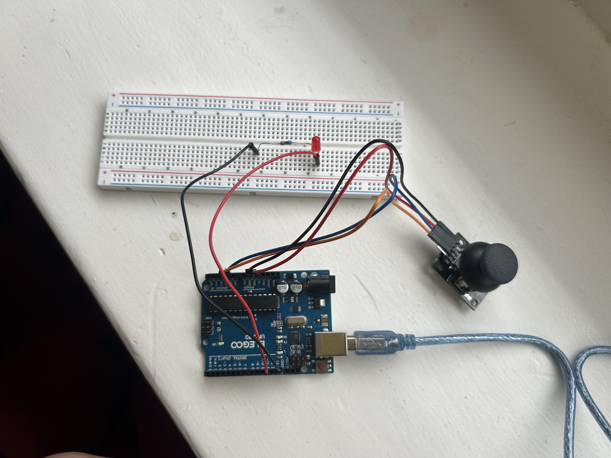

Demo Video
Concept
For my final project I want to create an interactive drinking game using a sensory input and the 4-digit 7 segment display as a timer-like output. The game will track how long it takes someone to chug a beverag and display the result when the beverage is returned to it's designated spot. Red and green LEDs would be used as start and stop indicators for the user to start drinking and also correspond with the start/stop of the timer. Disclaimer: All users that have interacted with this product are over the age of 21.
Technical Write Up
technical implementation and your execution Througout building this game, I went through many I initally thought that I might use a capacitive sensor or photoresistor to detect whether or not the can was placed in it's starting position or not.
Circuit Image
Setup Image
I had to solder the red and green LEDs to give them extra length to poke through the top of my game box. I also had to solder the photoresistor and red sensor LED to reach the dark sectioned off area where the can sits.
Schematic

Schematic of the 4 digit - 7 segment display, Red, Green, Sensor(Red) LED, and the photoresistor
Resistor Calculation
To calculate the resistor value for all the LEDs with a 1.8V voltage drop. Given that a LED should run at a 20mA current and the Arduino gives 5 volts. I used 220Ω resistors because it's the closest value greater than 160Ω. I used a 10kΩ resistor in series with my photoresistor in order to use less mA and current to conserve power in our circuit. With a 10k resistor I would have 0.5mA current which is a sufficient amount the detect brightness in the controlled enviroment inside my box. I also used this datasheet and webpage to pick the 330k resistance of the SevSeg display: https://www.farnell.com/datasheets/2095876.pdf & https://www.instructables.com/Using-a-4-digit-7-segment-display-with-arduino/
// LEDs
V = I x R // Ohm's Law
V = V - Vf = 5 - 1.8 = 3.2 V
I = 20mA = 0.02A
R = V / I = 3.2V / 0.02A = 160Ω
// Chose 220 resistors for the red and green LEDs
// Photoresistor
V = I x R // Ohm's Law
5 = I x 10000
I = .0005A = 0.5mA
// Chose 10k resistors for the photoresistor
Arduino Code
Cited example and github code: SevSeg - https://github.com/DeanIsMe/SevSeg?tab=readme-ov-file#hardware, Timer Example - https://wokwi.com/projects/344891439152366164, Blink without delay - https://docs.arduino.cc/built-in-examples/digital/BlinkWithoutDelay/
#include <SevSeg.h> // Include the SevSeg library from https://github.com/DeanIsMe/SevSeg?tab=readme-ov-file#hardware
SevSeg sevseg; // Define a seven-segment display
int sensorLED = A3; // Sensor LED pin (Red LED)
int greenLED = A1; // Green LED pin
int redLED = A2; // Red LED pin
const int sensorPin = A0; // Photoresistor sensor pin
const long lightThreshold = 150; // Adjusted light threshold from serial monitor
bool lastCanState = false; // Track the previous can state
bool gameRunning = false; // Tracks whether the game is running, initially set to false
bool gameFinished = false; // Prevents immediate restart after finishing the game
// Assign variables
unsigned long startTime = 0; // Set when the game starts, used to track elapsed time
unsigned long elapsedTime = 0; // Continuously updated time while running
unsigned long displayStartTime = 0; // Track how long the final time has been displayed before resetting
void setup() {
Serial.begin(9600); // Serial Monitor for debugging
// 7-segment display setup from Github
byte numDigits = 4;
byte digitPins[] = {2, 3, 4, 5};
byte segmentPins[] = {6, 7, 8, 9, 10, 11, 12, 13};
bool resistorsOnSegments = false;
byte hardwareConfig = COMMON_CATHODE;
bool updateWithDelays = false;
bool leadingZeros = false;
bool disableDecPoint = false;
sevseg.begin(hardwareConfig, numDigits, digitPins, segmentPins, resistorsOnSegments,
updateWithDelays, leadingZeros, disableDecPoint);
sevseg.setBrightness(80); // Recommended brightness
// Initialize LEDs as outputs
pinMode(greenLED, OUTPUT);
pinMode(redLED, OUTPUT);
pinMode(sensorLED, OUTPUT);
digitalWrite(redLED, HIGH); // Initally start with red LED on
sevseg.setChars("bEEr"); // Initial intro on display when game first starts up
}
void loop() {
digitalWrite(sensorLED, HIGH); // Internal sensor LED is always on
long sensorValue = analogRead(sensorPin); // Read photoresistor sensor value
// If the sensor value is less than the calculated threshold (ie. dark inside the box) the can is on
bool canOn = (sensorValue < lightThreshold);
// Detect when can is lifted and there is no game running then start the game
if (lastCanState && !canOn && !gameRunning && !gameFinished) {
startGame(); // See function below
}
// Detect when can is back and the game is still running stop the game
if (!lastCanState && canOn && gameRunning) {
stopGame(); // See function below
}
lastCanState = canOn; // Store the last sensor state for the next game
// Update timer display while game is running
if (gameRunning) {
// Code adapted from timer example: https://wokwi.com/projects/344891439152366164 (from github, must be in loop)
unsigned long currentTime = millis();
elapsedTime = (currentTime - startTime) / 100; // Convert to deciseconds
sevseg.setNumber(elapsedTime, 1); // Continuously update display
}
// Makes sure the game has ended and after 5 seconds then shows the end-game message and reset the display
// Syntax to blink without delay derived from https://docs.arduino.cc/built-in-examples/digital/BlinkWithoutDelay/
if (!gameRunning && displayStartTime > 0 && millis() - displayStartTime > 5000) {
finishSequence(); // Show finish message on display
sevseg.setNumber(0, 1); // Reset display to 0.0
displayStartTime = 0; // Reset timer for next game
gameFinished = false; // Mark game as done and allows the game to start again
}
sevseg.refreshDisplay(); // Refresh 7-segment display
}
// Function to start countdown and begin timing
void startGame() {
gameFinished = false; // Reset when game starts
countdownSequence(); // Show start sequence
digitalWrite(greenLED, HIGH); // Turn on Green LED
digitalWrite(redLED, LOW); // Turn off Red LED
startTime = millis();
gameRunning = true; // Initate timer on display
}
// Function to stop timer and display end-game result
void stopGame() {
gameRunning = false; // Mark game as stopped
displayStartTime = millis(); // Start 5-second display countdown
gameFinished = true; // Prevent immediate restart
digitalWrite(greenLED, LOW); // Turn off Green LED
digitalWrite(redLED, HIGH); // Turn on Red LED
sevseg.setNumber(elapsedTime, 1); // Show final time
}
// Function that runs the countdown sequence before game starts
void countdownSequence() {
int countdown = 3;
for (countdown; countdown >= 0; countdown--) {
if (countdown > 0) {
sevseg.setNumber(countdown); // 3,2,1 countdown on display
} else {
sevseg.setChars("GO"); // Display "GO"
}
// Show each number/GO for 1 second (alterative to using delay() with sevseg)
unsigned long startMillis = millis();
while (millis() - startMillis < 1000) {
sevseg.refreshDisplay();
}
}
}
// Function that is displayed after the game is finished
void finishSequence() {
unsigned long finishStartTime = millis(); // Track when the sequence starts
if (elapsedTime < 300) {
sevseg.setChars("rAd."); // Less than 30 seconds
} else if (elapsedTime < 600) {
sevseg.setChars("Good."); // Less than 60 seconds
} else {
sevseg.setChars("EH."); // More than 1 minute
}
// Show message for 3 seconds (alterative to using delay() with sevseg)
while (millis() - finishStartTime < 3000) {
sevseg.refreshDisplay();
}
}